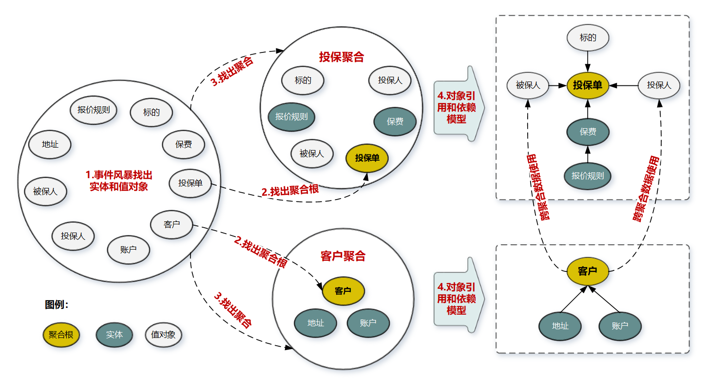
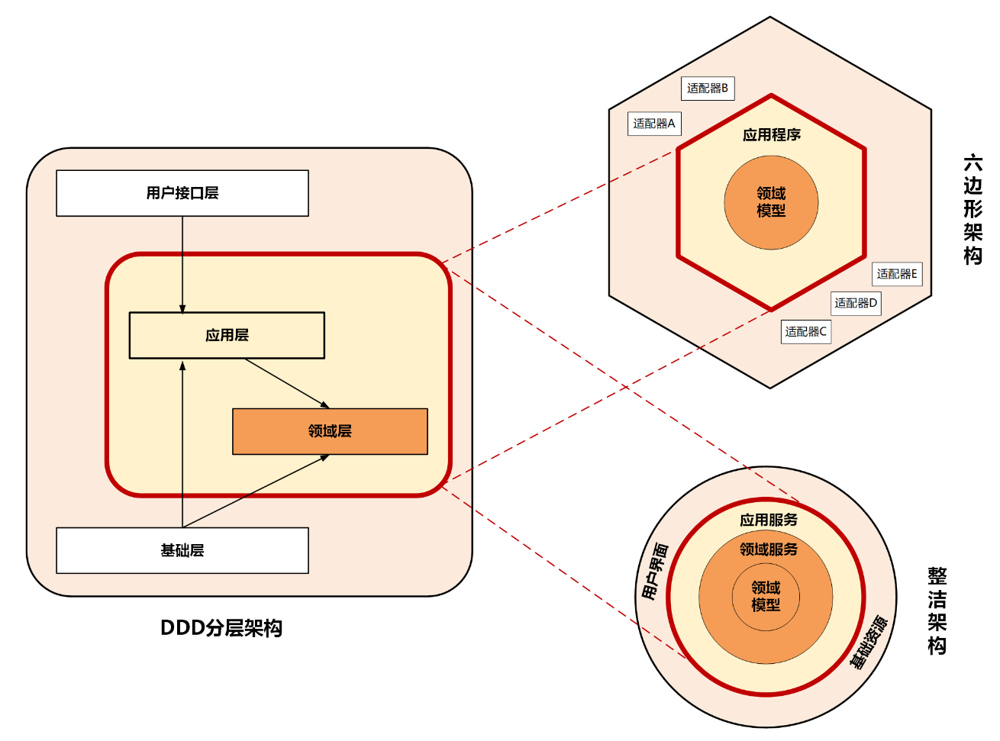

领域边界 #

- 在事件风暴中梳理业务过程中的用户操作、事件以及外部依赖关系等，根据这些要素梳理出领域实体等领域对象
- 根据领域实体之间的业务关联性，将业务紧密相关的实体进行组合形成聚合，同时确定聚合中的聚合根、值对象和实体。在这个图里，聚合之间的边界是第一层边界，它们在同一个微服务实例中运行，这个边界是逻辑边界，所以用虚线表示
- 根据业务及语义边界等因素，将一个或者多个聚合划定在一个限界上下文内，形成领域模型。在这个图里，限界上下文之间的边界是第二层边界，这一层边界可能就是未来微服务的边界，不同限界上下文内的领域逻辑被隔离在不同的微服务实例中运行，物理上相互隔离，所以是物理边界，边界之间用实线来表示
领域
这个边界内要解决的业务问题域.
在研究和解决业务问题时，DDD 会按照一定的规则将业务领域进行细分，当领域细分到一定的程度后，DDD 会将问题范围限定在特定的边界内，在这个边界内建立领域模型，进而用代码实现该领域模型，解决相应的业务问题
子域
我们把划分出来的多个子领域称为子域，每个子域对应一个更小的问题域或更小的业务范围
核心域
决定产品和公司核心竞争力的子域是核心域，它是业务成功的主要因素和公司的核心竞争力
通用域
没有太多个性化的诉求，同时被多个子域使用的通用功能子域是通用域
支撑域
子域是必需的，但既不包含决定产品和公司核心竞争力的功能，也不包含通用功能的子域，它就是支撑域.
限界上下文 Bounded Context
通用语言定义上下文含义，限界上下文则定义领域边界
通用语言
在事件风暴过程中，通过团队交流达成共识的，能够简单、清晰、准确描述业务涵义和规则的语言就是通用语言
设计过程中我们可以用一些表格，来记录事件风暴和微服务设计过程中产生的领域对象及其属性
DDD 分析和设计过程中的每一个环节都需要保证限界上下文内术语的统一，在代码模型设计的时侯就要建立领域对象和代码对象的一一映射，从而保证业务模型和代码模型的一致，实现业务语言与代码语言的统一.
领域边界就是通过限界上下文来定义的.
我们将限界上下文内的领域模型映射到微服务，就完成了从问题域到软件的解决方案.
实体 Entity #
在 DDD 中有这样一类对象，它们拥有唯一标识符，且标识符在历经各种状态变更后仍能保持一致。对这些对象而言，重要的不是其属性，而是其延续性和标识，对象的延续性和标识会跨越甚至超出软件的生命周期。我们把这样的对象称为实体
实体和值对象是组成领域模型的基础单元.
实体的代码形态
- 充血模型
实体的运行形态
- 实体以 DO（领域对象）的形式存在，每个实体对象都有唯一的 ID.
值对象 ValueObject #
通过对象属性值来识别的对象，它将多个相关属性组合为一个概念整体.值对象本质上就是一个集.
在领域建模时，我们可以将部分对象设计为值对象，保留对象的业务涵义，同时又减少了实体的数量；在数据建模时，我们可以将值对象嵌入实体，减少实体表的数量，简化数据库设计.
DDD 提倡从领域模型设计出发，而不是先设计数据模型.
聚合 Aggregate #
领域模型内的实体和值对象就好比个体，而能让实体和值对象协同工作的组织就是聚合，它用来确保这些领域对象在实现共同的业务逻辑时，能保证数据的一致性。
聚合根 AggregateRoot
如果把聚合比作组织，那聚合根就是这个组织的负责人。聚合根也称为根实体，它不仅是实体，还是聚合的管理者。
聚合的构建过程 
- 采用事件风暴，根据业务行为，梳理出在投保过程中发生这些行为的所有的实体和值对象，比如投保单、标的、客户、被保人等等。
- 从众多实体中选出适合作为对象管理者的根实体，也就是聚合根。判断一个实体是否是聚合根，你可以结合以下场景分析：是否有独立的生命周期？是否有全局唯一 ID？是否可以创建或修改其它对象？是否有专门的模块来管这个实体。图中的聚合根分别是投保单和客户实体。
- 根据业务单一职责和高内聚原则，找出与聚合根关联的所有紧密依赖的实体和值对象。构建出 1 个包含聚合根（唯一）、多个实体和值对象的对象集合，这个集合就是聚合。在图中我们构建了客户和投保这两个聚合。
- 在聚合内根据聚合根、实体和值对象的依赖关系，画出对象的引用和依赖模型。这里我需要说明一下：投保人和被保人的数据，是通过关联客户 ID 从客户聚合中获取的，在投保聚合里它们是投保单的值对象，这些值对象的数据是客户的冗余数据，即使未来客户聚合的数据发生了变更，也不会影响投保单的值对象数据。从图中我们还可以看出实体之间的引用关系，比如在投保聚合里投保单聚合根引用了报价单实体，报价单实体则引用了报价规则子实体。
- 多个聚合根据业务语义和上下文一起划分到同一个限界上下文内。
聚合设计原则
- 在一致性边界内建模真正的不变条件
- 设计小聚合
- 通过唯一标识引用其它聚合
- 在边界之外使用最终一致性
- 通过应用层实现跨聚合的服务调用
领域事件 Domain Event #
这种事件发生后通常会导致进一步的业务操作，在 DDD 中这种事件被称为领域事件
流程
- 事件构建和发布
- 事件数据持久化
- 事件总线
- 消息中间件
- 事件接收和处理
DDD分层架构 #
- 用户接口层 // 用户、程序、自动化测试和批处理脚本etc.
- 应用层 // 很薄的一层，理论上不应该有业务规则或逻辑，主要面向用例和流程相关的操作
- 领域层 // 实现企业核心业务逻辑，通过各种校验手段保证业务的正确性
- 基础层 // 第三方工具、驱动、消息中间件、网关、文件、缓存以及数据库etc.
- 依赖倒置 // 实现了各层对基础层的解耦
整洁架构 #
又名"洋葱架构".整洁架构最主要的原则是依赖原则，它定义了各层的依赖关系，越往里依赖越低，代码级别越高，越是核心能力。外圆代码依赖只能指向内圆，内圆不需要知道外圆的任何情况
六边形架构 #
应用是通过端口与外部进行交互的
